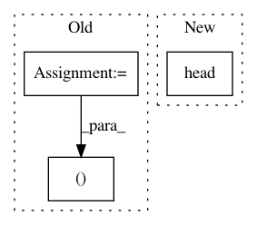

39813c572463211d05f35a0dcac56ba7bd07c725,examples/plot_investigating_dirty_categories.py,,,#,17
Before Change
// categories.
from sklearn.preprocessing import CategoricalEncoder
n_obs, n_categories = 20, 20
// employee_position_titles = values[
// "Employee Position Title"].sort_values().to_frame()
// or
After Change
// encoding simply a subset of the observations
n_obs = 20
employee_position_titles = values["Employee Position Title"].head(
n_obs).to_frame()
categorical_encoder = CategoricalEncoder(encoding="onehot-dense")
one_hot_encoded = categorical_encoder.fit_transform(employee_position_titles)
In pattern: SUPERPATTERN
Frequency: 3
Non-data size: 3
Instances
Project Name: dirty-cat/dirty_cat
Commit Name: 39813c572463211d05f35a0dcac56ba7bd07c725
Time: 2018-06-07
Author: pierreglaser@msn.com
File Name: examples/plot_investigating_dirty_categories.py
Class Name:
Method Name:
Project Name: ContextLab/hypertools
Commit Name: c58c11a2639beb9a78e3babe7754a49bfd61c060
Time: 2018-02-22
Author: andrew.heusser@gmail.com
File Name: docs/auto_examples/plot_dataframe.py
Class Name:
Method Name:
Project Name: ContextLab/hypertools
Commit Name: 9aae219f8ef4f9850cd8ea7001d711bdb54721bf
Time: 2018-02-22
Author: andrew.heusser@gmail.com
File Name: examples/plot_dataframe.py
Class Name:
Method Name: